Removing and Installing/Replacing Controls on Left/Right Front Seat (Normal/Manual)
52 13 015 - Removing and Installing / Replacing Controls on Left / Right Front Seat (Normal / Manual)

Warning!
The actuating unit for front seats
which was fitted during car production
is different from the spare part.
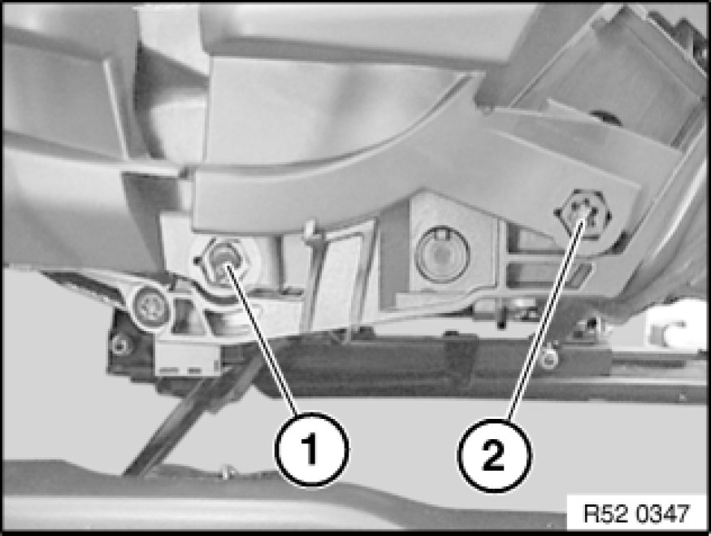
Actuating unit version (A):
The two adjusting screws (1) and (2) for eccentric disks,
have a commercially available Torx screw head
which is sealed with hot-melt adhesive.
- The adjusting screws (1) and (2) must not be adjusted in the workshop.
- The actuating unit may only be removed from
and refitted to the same front seat.
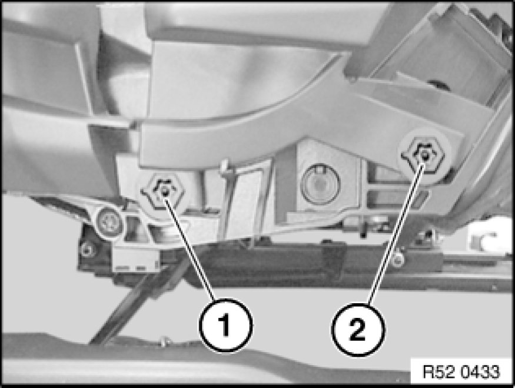
Actuating unit version (B):
The two adjusting screws (1) and (2) for eccentric disks,
are secured with tamper protection in the screw head.
- The adjusting screws (1) and (2) must not be adjusted in the workshop.
- The actuating unit may only be removed from
and refitted to the same front seat.
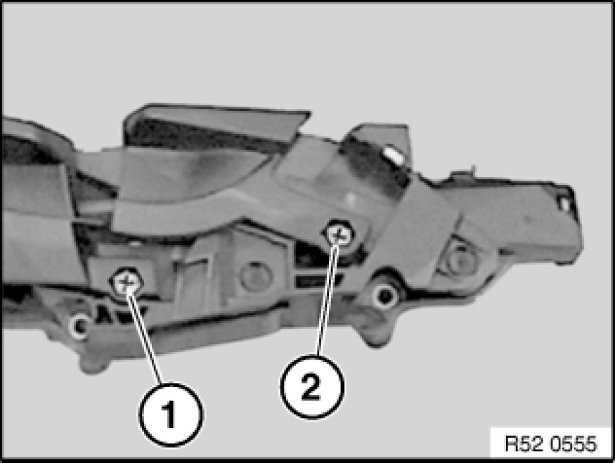
Actuating unit version (C) (spare part):
The two adjusting screws for the eccentric disk have conventional Phillips heads.
- The adjusting screws (1) and (2) can be adjusted in the workshop.
- The actuating unit may be fitted to either front seat.
- Prior to installation, apply an acid-free grease to thread; the grease forces the eccentric disk upwards during adjustment

Removing and installing actuating unit:
Remove front seat,
refer to 52 13 000 Front Seat, Normal, Manual.
Remove outer cover on front seat,
refer to 52 13 040 Removing and Installing/Replacing Outer Cover on Left or Right Front Seat Back-Rest (Normal/Manual).
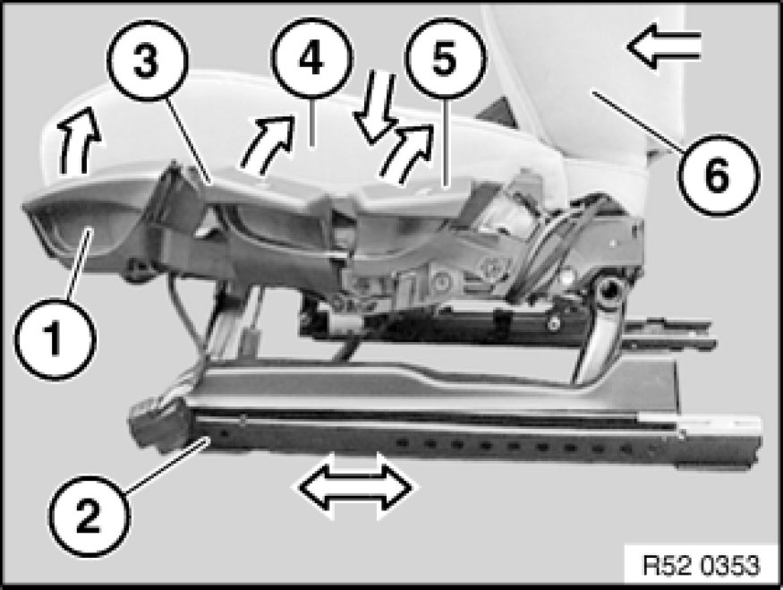
Move front seat to basic position:
Caution!
One seat runner is spring-loaded, risk of injury when unlocking.
Operate actuating lever (1) and snap seat runners (2) into position by sliding.
Operate actuating lever (3) and snap seat cushion (4) into position by loading.
Operate actuating lever (5) and snap seat backrest (6) into position by moving.
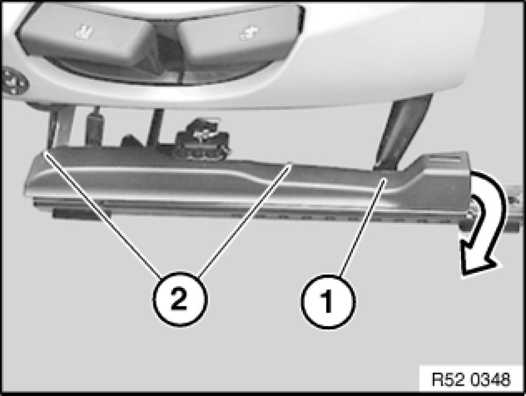
Lever out rear trim (1), unclip clips (2) and remove trim (1).
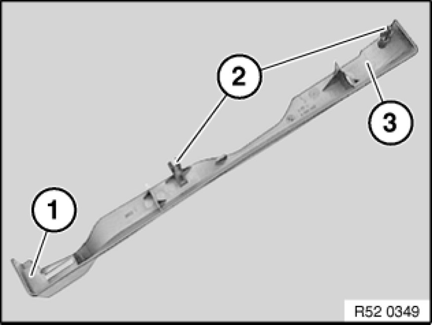
Installation:
Catch (1) and clips (2) on trim (3) must not be damaged; replace if necessary.
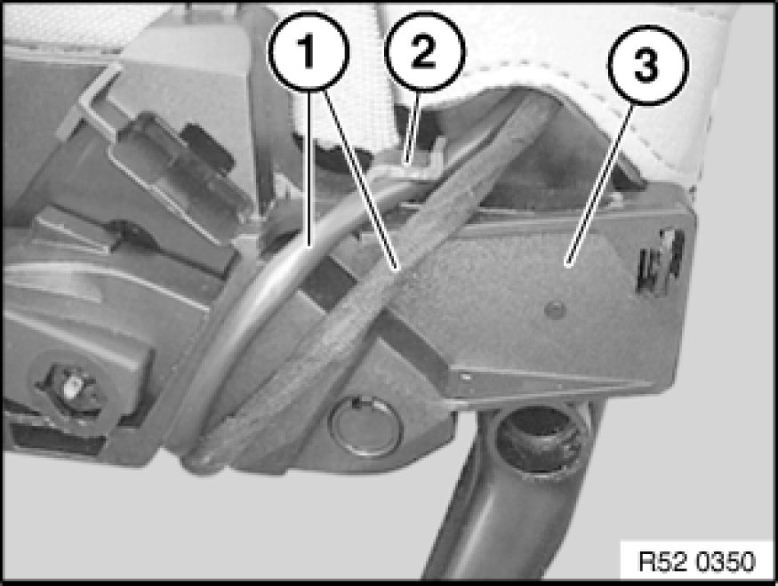
Version with seat heater and/or lumbar support:
Slide cable (1) out of fixture (2) of actuating unit (3).
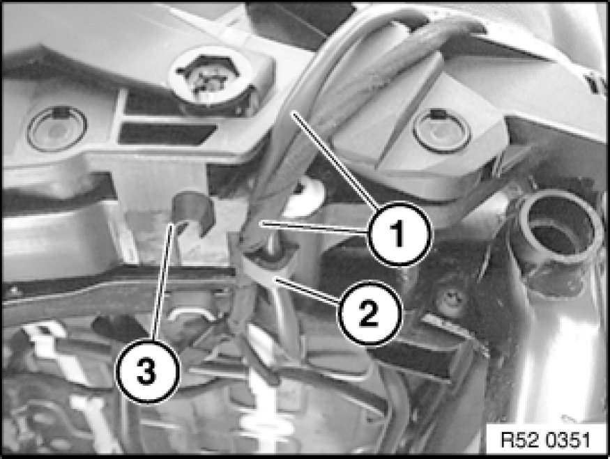
Version with seat heater and/or lumbar support:
Slide cable (1) out of fixture (2) of
actuating unit (3).
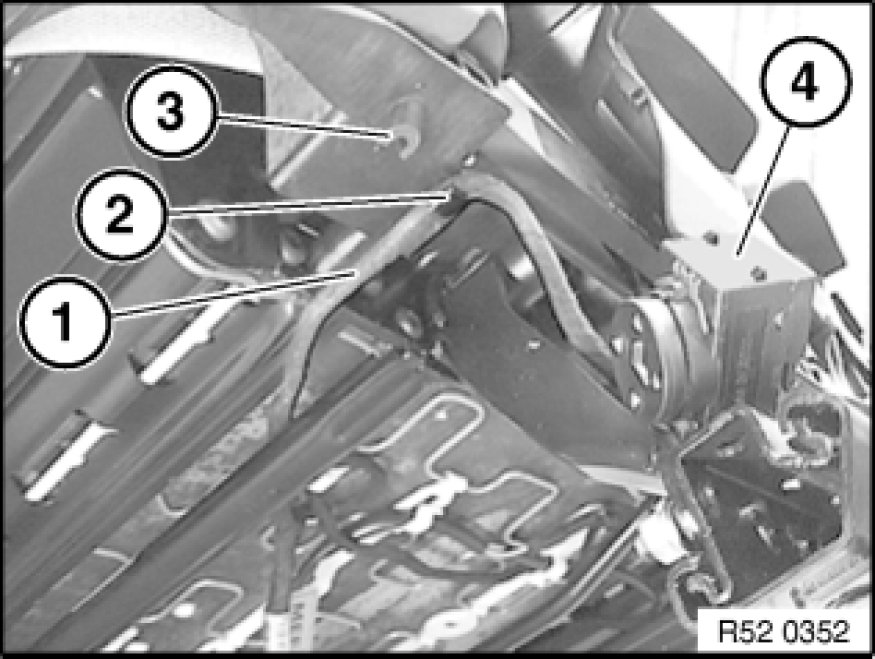
Model with lumbar supports:
If necessary, slide cable (1) out of fixture (2) of
actuating unit (3).
If necessary, disconnect switch (4).
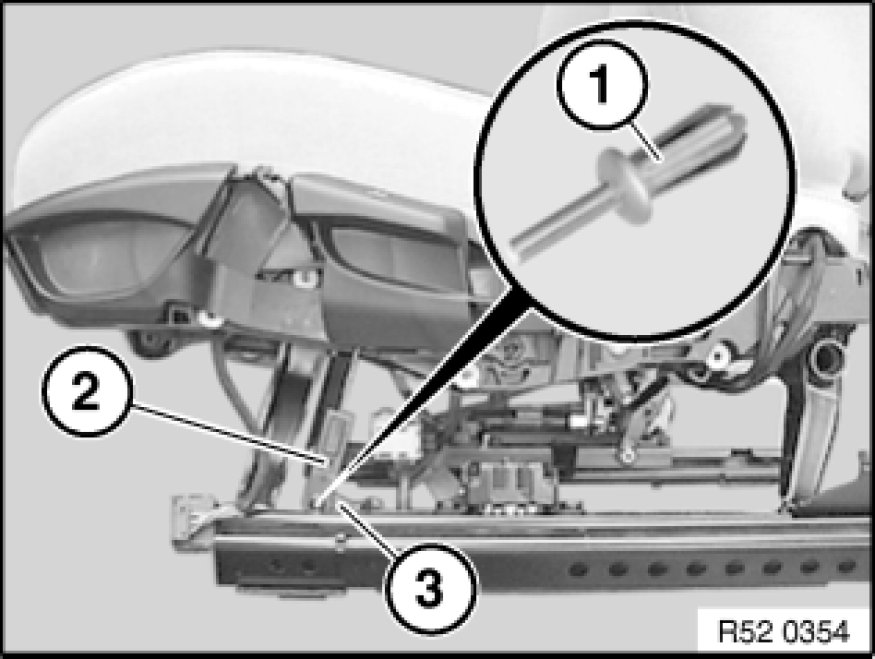
Release expansion rivet (1) and detach rocker (2) (adjustment lever) from lever (3).
Caution!
Do not turn adjustment lever (2) on threaded rod (2).
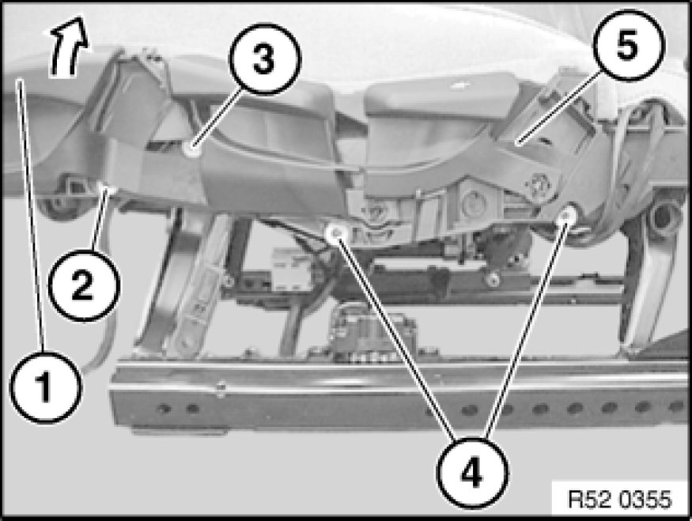
Lift actuating lever (1) and release screw (2).
Release screws (3) and (4) and detach actuating unit (5).
Installation:
Screw (3) is shorter than the others.
Insert screw (3) for assembly into actuating unit (5).
Tightening torque,
refer to Technical Data 52 10 7AZ [1][2]Seats.
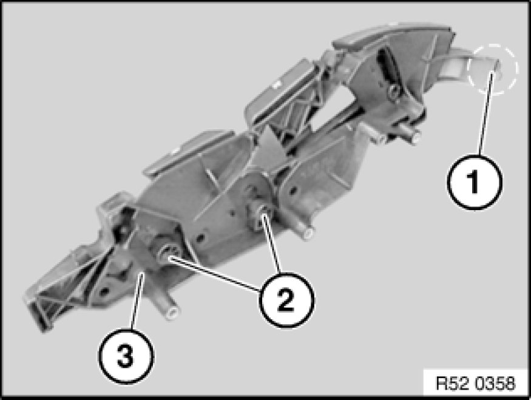
Installation:
Front guide (1) and eccentric disks (2) on actuating unit (3) must not be damaged.
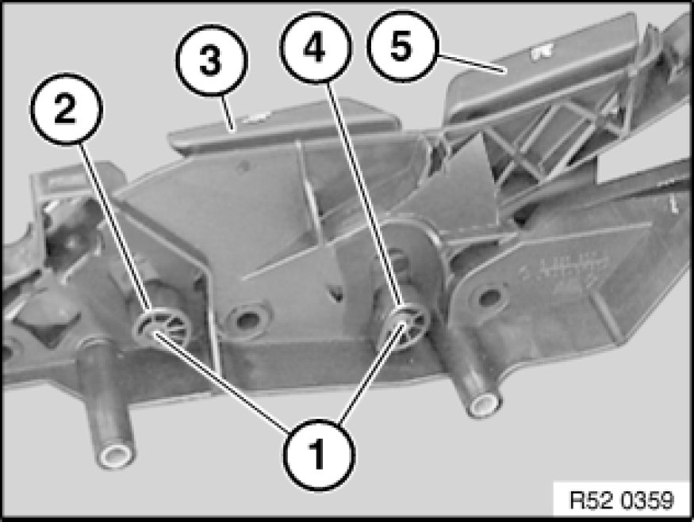
Replacement of actuating unit version (C) (spare part) only:
Installation:
For adjustment, coat threads (1) with acid-free grease.
The eccentric disks (2) and (4) are carried upwards for adjustment by the grease.
1. Threads for eccentric disks
2. Eccentric disk for backrest adjustment
3. Actuating lever for backrest adjustment
4. Eccentric disk for seat height adjustment
5. Actuating lever for seat height adjustment
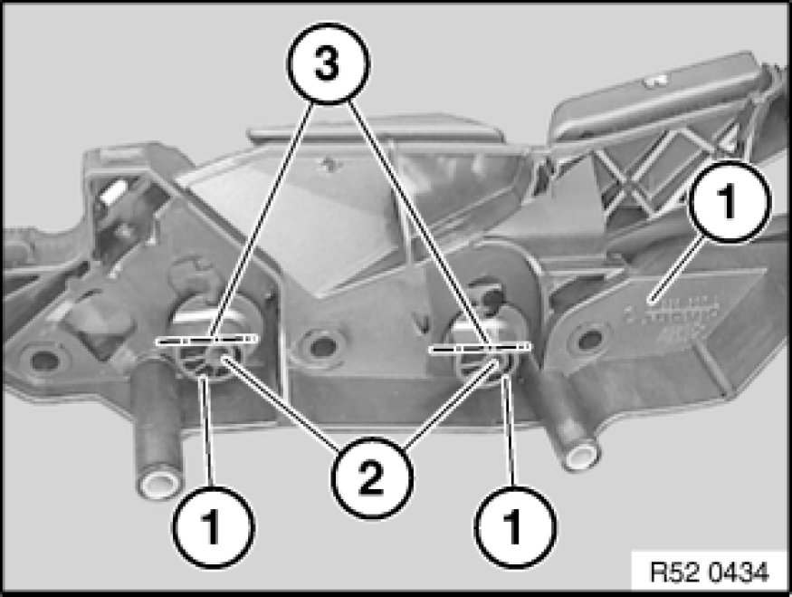
Adjusting actuating unit, actuating unit version (C) (spare part) only:
Adjusting seat height and backrest inclination:
- The screw heads of threads (2) must remain clipped in place
- Unscrew eccentric disk (1)
- Apply acid-free grease to threads (2)
- Screw on eccentric disk (1)
- Turn eccentric disk (1) to zero position:
straight surface (3) of eccentric disk (1) must be at top.
Note:
The picture does not match the replacement unit, the replacement unit has Phillips screws.
- Install actuating unit.
- Press screws (1) and (2) out of hexagon head to seat center and screw down.
Tightening torque,
refer to Technical Data 51 12 8AZ [1][2]Seats.
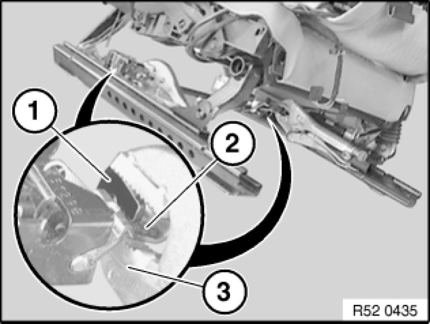
Adjust longitudinal seat setting:
- Compress unlocking plates (1) and (2) on seat runner on left/right with gripping pliers (3) (free of play)
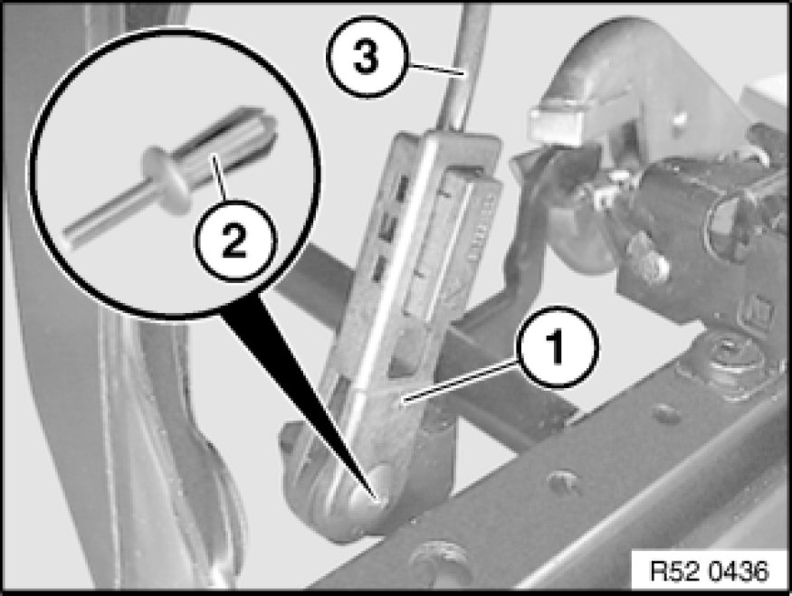
Adjust longitudinal seat setting:
- Push new coupling link (1) (adjustment lever) onto threaded rod (3) and secure with expansion rivet (2)
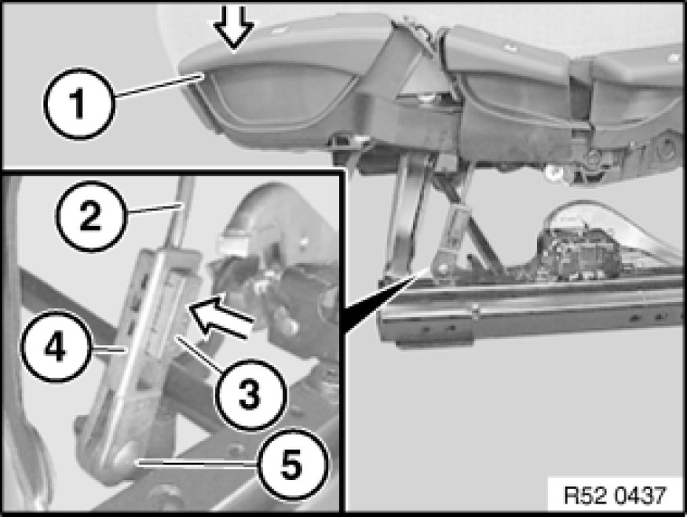
Adjust longitudinal seat setting:
- Press actuating lever (1) for longitudinal seat adjustment downwards and press together locking clip (3) on coupling link (4)
(coupling link (4) is now firmly connected to threaded rod (2))
- Install front seat in the car.
- If necessary, release expansion rivet (5) and readjust by turning coupling link (4)
Move front seat to basic position:
- Operate actuating lever (1) and snap seat runners (2) into position by sliding.
- Operate actuating lever (3) and snap seat cushion (4)
into position by loading.
- Operate actuating lever (5) and snap seat backrest (6)
into position by moving.
- Each actuating lever must have clearance until the mechanism is unlocked
- If there is no clearance, the mechanism may be in a semi-unlocked state (risk of injury in event of an accident)
- If there is excessive clearance, the mechanism may not unlock completely (no adjustment possible)
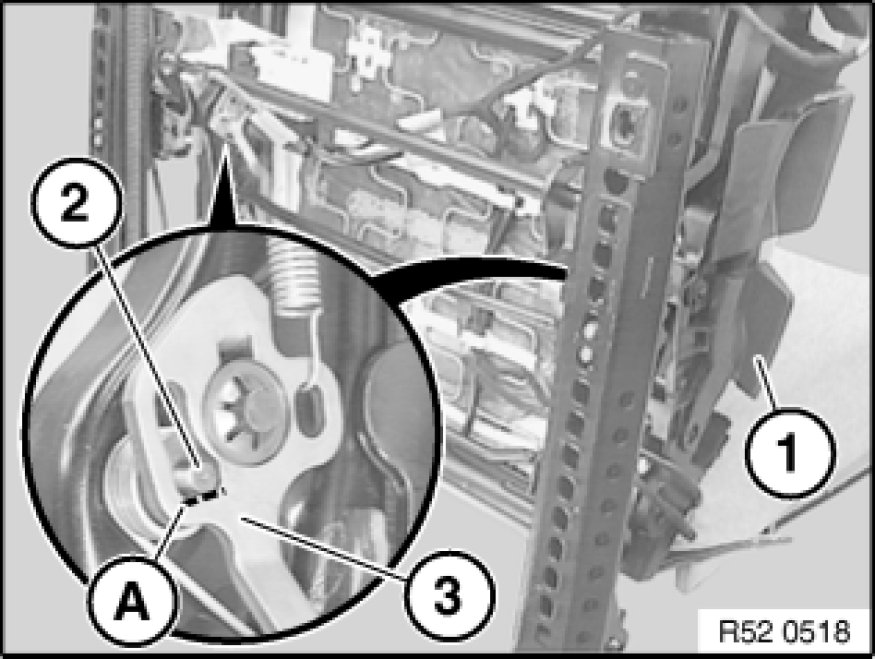
Carrying out checks of seat height and backrest inclination adjustment (danger to life of vehicle occupants):
Check backrest inclination:
- Front seat must be in basic position
- Actuating lever (1) must be in zero position
- Pin (2) must rest against pull rod (3)
- There must be a clearance (A)
(A) - 0 to 0.5 mm
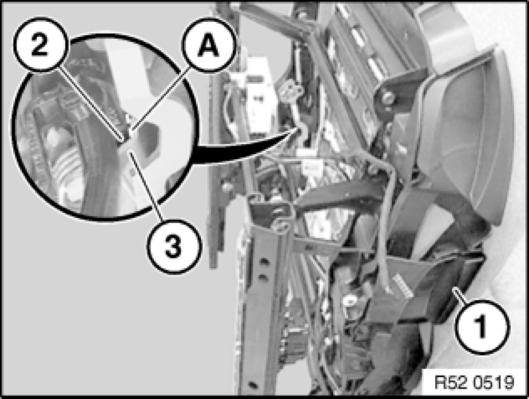
Check seat height:
- Front seat must be in basic position
- Actuating lever (1) must be in zero position
- Metal lever (2) must rest against metal lever (3)
- There must be a clearance (A)
(A) - 0 to 0.5 mm